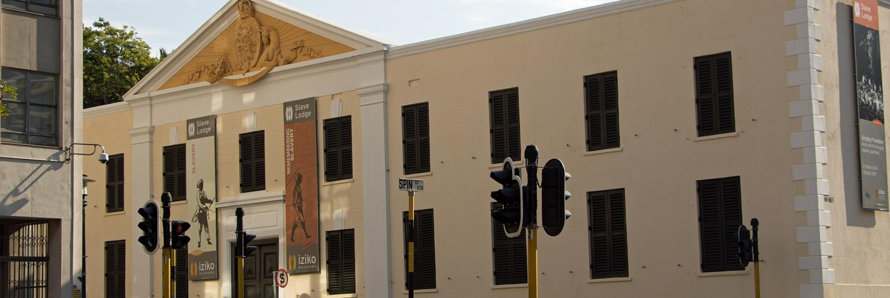
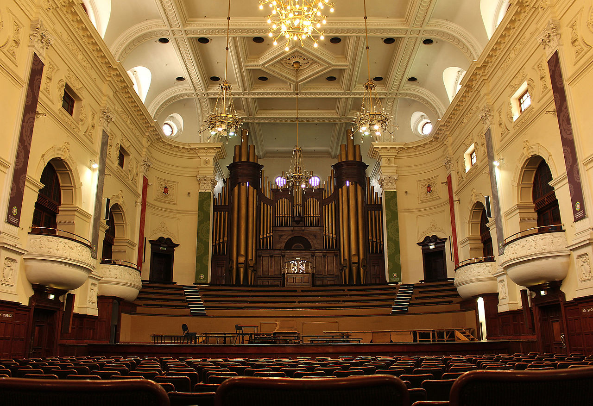
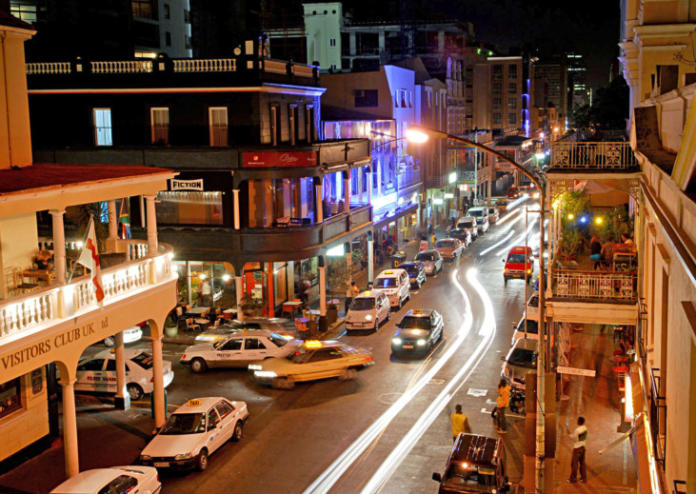

Historical Places in CapeTown
IZIKO SLAVE LODGE
 The slave lodge is one of the oldest buildings in CapeTown. The building has answered to many names in the last three centuries, namely: Slave lodge, Government Office building, old Supreme court, and SA cultural history museum. All these names reflect the long and rich history of the building.CITY HALL
 The Hall itself is made up of components from all over the world. The honey-coloured stone which makes up its facade of limestone was import from Bath in England. The lower a clock and number of bells modelled on the famous Big Ben. The clocks strikes the hours and chimes the westminister quarters which is a particular chime originated from St Mary's cathedral in England. The faces of the clock are made from four skeleton iron dials filled with opal. Originally built to house the City of CapeTown's offices. It now plays the host to a number of cultural and artistic events.LONG STREET
 It is the major street located in the city bowl section of CapeTown South Africa. It is famous as a bohamain hangout an dthe street is lined with many book stores, various ethnic resturants and bars. Resturants includes African resturant such as Zula an dIndian resturant such as Masala Dosa. Long Street exhibits a divesified culture and attracts tourists from all over the world. It also has the number of youth hotels which provides accomodation to an international rooster of guests. Several theatres which shows anti-apartheid plays were located on the street during the 1970's.